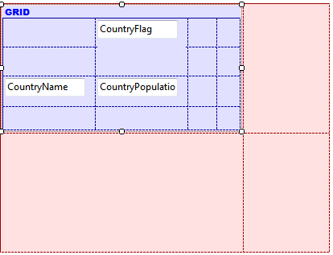

HowTo: Using SD Paged Grid Control for Smart Devices
This article shows a little example of how this control is used and how it looks in a Smart Device application. The paged grid control applies to a list of elements. It gives a new behavior and looks like a list. Also, it shows one record of a list per page. This enables you to show more information and navigate through the list in an enhanced way. Double-tapping allows you to access the detailed view of the Item. For example:
To show you another example, we will use the following Transaction. To enable this control, you need to go to the Grid Control Type property and select SD Paged Grid value. When you select this control, you can see three new properties that can be configured:
These properties help you customize how the control looks. Lastly, just to see the effect of this control, let's organize the list layout better:  Done! You have a new way to view your list. Ipad: AvailabilityAvailable for Android and iOS. |